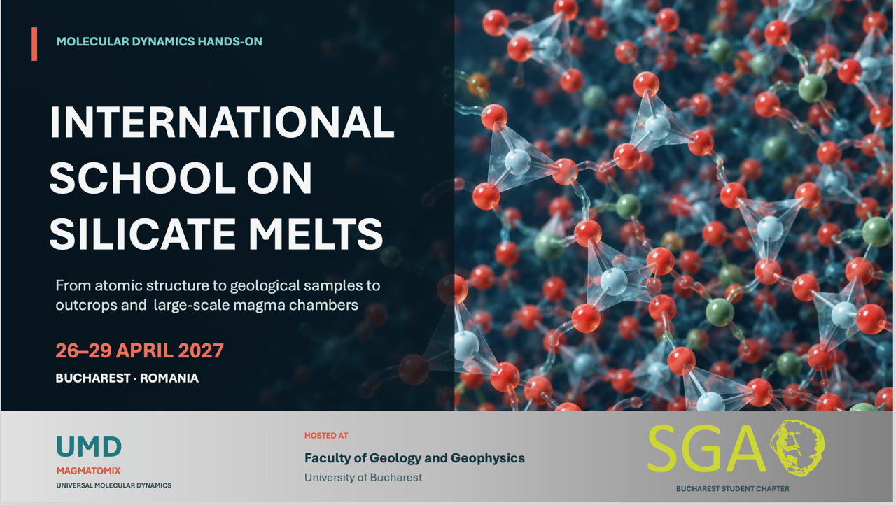

Upcoming Events
2026 Events
-
Start of Year
Meet the chapter, learn what we have planned, and find out how to get involved this academic year.
- Date
- October 2026
- Location
- University of Bucharest
- Status
- TBA
-
Field Trip: Mineralogy of Volcanic Rocks and Mineral Resources of the Racoș Area
A field-based study of volcanic rocks and their associated mineral assemblage in the Racoș area.
- Date
- October 2026
- Location
- Racoș Area
- Status
- TBA
-
Online Workshops
Join practical online sessions covering topics in geoscience, geology, geophysics, and mineralogy.
- Date
- To be announced
- Location
- Online
- Status
- TBA
2027 Events
-
International School on Silicate Melts
Explore the journey from atomic structure to geological samples, outcrops, and large-scale magma chambers, led by Răzvan Caracaș.
Find more details here.- Date
- 26-29 April 2027
- Location
- Bucharest, Romania
- Status
- Confirmed
